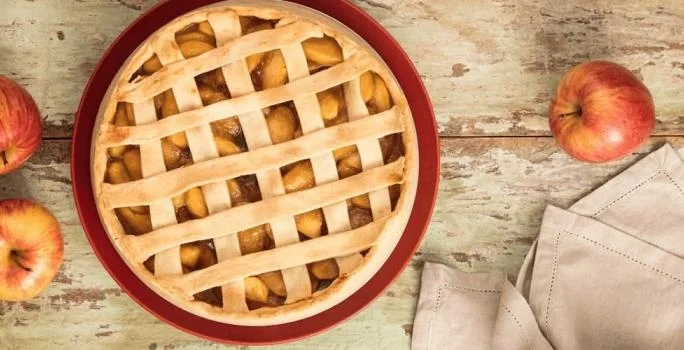

Sobremesas Populares:
| Receita |
Dificuldade |
Tempo |
Porçoes |
| Sorvete de Chocolate |
Fácil |
180 min |
6 |
| Torta de Maça |
Médio |
80 min |
10 |
| Bolo de Morango |
Fácil |
55 min |
10 |
Torta de Maça
Ingredientes

Massa
- Meia xícara (chá) de açúcar
- 2 Xícaras (chá) de farinha de trigo
- Meia colher (chá) de canela em pó
- 1 Pitada de sal
- 3 Colheres (sopa) de óleo de coco
- Meia xícara (chá) de NATURE'S HEART® Bebida Vegetal de Amêndoa
Modo de preparo da Massa:
- Em um recipiente, misture o açúcar, a farinha de trigo, a canela em pó, o sal e o óleo de coco até formar uma farofa úmida. Adicione aos poucos o NATURE'S HEART Bebida Vegetal de Amêndoa até que a massa fique uniforme.
- Abra a massa em uma forma de fundo removível (20 cm de diâmetro). Separe uma parte da massa para cobrir a torta e reserve.
Creme
- 1 Caixinha de MOÇA® Origem Vegetal
- 1 Xícara (chá) de NATURE'S HEART® Bebida Vegetal Aveia
- 3 colheres (sopa) de amido de milho
- Meia colher (chá) de essência baunilha
- 1 pitada de sal
Modo de preparo do Creme:
- Em uma panela, adicione o MOÇA Origem Vegetal, o NATURE'S HEART Bebida Vegetal Aveia, o amido de milho, a essência de baunilha e o sal.
- Leve ao fogo médio e mexa até que se forme um creme. Em seguida, disponha o creme na base da torta.
Recheio
- 1 Pitada sal
- 4 Maçãs fuji sem casca cortadas em cubos pequenos
- 1 Colher (chá) de canela em pó
meia xícara (chá) de uvas passas pretas hidratadas
Modo de preparo do Recheio:
- Em um recipiente, misture todos os ingredientes e disponha encima do creme. Cubra a torta com tiras do restante da massa e leve ao forno preaquecido (180°C) por 40 minutos ou até que a massa esteja dourada.
Sorvete de Chocolate
Ingredientes

Sorvete
- 1 Leite MOÇA® (lata ou caixinha) 395 g
- 1 xícara (chá) de Chocolate em Pó NESTLÉ® DOIS FRADES® mesma medida (da lata) de leite
- 1 lata de NESTLÉ® Creme de Leite raspas de chocolate para decorar cerejas em calda para decorar
Modo de preparo:
- Em um liquidificador, bata o Leite MOÇA, o Chocolate em Pó NESTLÉ DOIS FRADES, o leite e o NESTLÉ Creme de Leite por cerca de 5 minutos.
- Despeje em recipiente refratário com tampa e leve ao freezer por cerca de 3 horas.
- Sirva em taças, decorado com as raspas de chocolate e as cerejas em calda.
Utensílios:
- Liquidificador
- Congelador
Bolo de Morango
Ingredientes

Massa
- 3 ovos
- 1/2 xícara (chá) de óleo
- 1 xícara (chá) de açúcar
- 130 g de NESQUIK® em Pó
- 1/2 xícara (chá) de Leite Líquido NINHO® Forti+ Integral
- 2 xícaras (chá) de farinha de trigo
- 1 colher (sopa) de fermento em pó
Cobertura
- 200 g de Chocolate NESTLÉ® CLASSIC® ao Leite
- 200 g de Creme De Leite NESTLÉ®
- Confeito a gosto
Modo de preparo:
- Em uma tigela grande, adicione os ovos, o óleo e o açúcar, e bata com um batedor de arame.
- Em seguida, adicione e o NESQUIK em pó sabor morango à tigela. Misture bem até obter uma massa homogênea.
- Acrescente aos poucos o leite e a farinha de trigo peneirada à massa e continue mexendo até incorporá-los à massa.
- Por último, adicione o fermento em pó à massa e misture suavemente até que esteja completamente incorporado.
- Despeje a massa na forma redonda (22cm) untada e leve ao forno preaquecido a 180ºC por aproximadamente 30 a 40 minutos, ou até que ao espetar um palito no centro do bolo, ele saia limpo.
- Retire o bolo do forno assim que estiver pronto e deixe esfriar por alguns minutos na forma antes de desenformá-lo.
- Em um recipiente, derreta o Chocolate NESTLÉ CLASSIC ao leite em banho-maria ou no microondas. Quando o chocolate estiver derretido, adicione o Creme de Leite NESTLÉ e misture até obter um ganache cremoso e homogêneo.
- Desenforme o bolo e cubra-o com a cobertura de chocolate. Decore com os confeitos de chocolate a gosto.